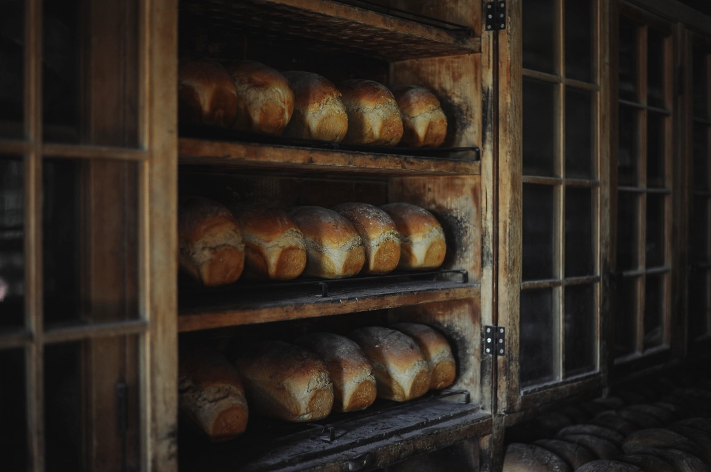

Dear friend,Bạn thân mến,
A wooden counter, a paper bag, a warm helloMột quầy gỗ, một túi giấy, một lời chào ấm
Mộc Miên began with a simple wish: to bring back the corner bakery we remember. The smell of bread drifting down the lane, cakes wrapped in thin paper, someone behind the counter who knows your name.
Mộc Miên bắt đầu từ một mong muốn giản dị: mang lại tiệm bánh đầu ngõ trong ký ức. Mùi bánh mì bay khắp con hẻm, chiếc bánh gói trong lớp giấy mỏng, và người đứng quầy nhớ tên bạn.
We still bake in small batches and still wrap every order by hand.
Chúng tôi vẫn nướng từng mẻ nhỏ và vẫn tự tay gói từng phần bánh.